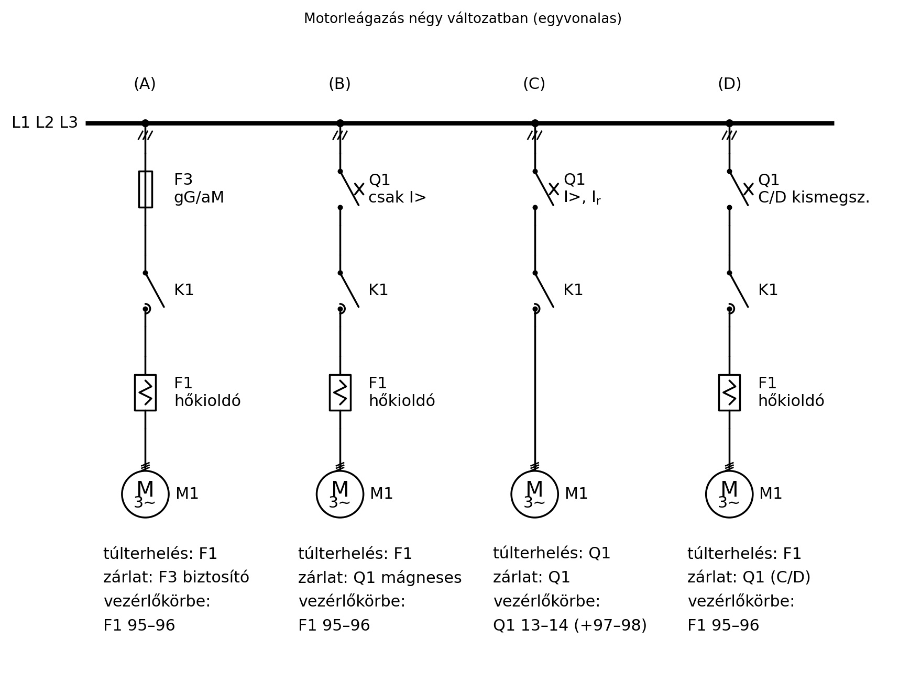

![PTC-relé és fázisfigyelő relé a vezérlőkörben (alapállapot) - Bal oldalon a főkör egyvonalasan: Q1 motorvédő kapcsoló, K1 főérintkező, M1 motor a tekercsbe épített PTC-lánccal. A Q1 utáni három fázis a K5 fázisfigyelő relé L1–L2–L3 mérőbemenetére megy. A PTC-lánc az X1:T1, X1:T2 sorkapcson át (külön vezetett vagy árnyékolt kábelen) a B1 PTC-relé T1–T2 bemenetére jut; B1 tápja A1–A2. Jobbra a vezérlőkör: F2 → Q1 13–14 → K5 11–14 (fázis rendben) → B1 11–14 (hőmérséklet rendben) → S0 → S1 ∥ K1 13–14 → K1 tekercs → N. A K5 és B1 kimenete rendben állapotban zár (működőáramú elv); a rajz alapállapotú, feszültségmentes.](assets/ve111-diagram-2.png)
Egy ipari fűrészgép 11 kW-os aszinkron motorja leáll túlterhelés miatt. Az üzemeltető először azt kéri: „tekerjük feljebb a védelmet, hogy ne álljon le”. A szerelőnek azonban nem a védelem kiiktatása, hanem a helyes beállítás a feladata. Ha a hőkioldót a motor névleges áramánál magasabbra állítja, akkor a tekercs túlmelegedhet, és a szigetelés elöregszik; ha túl alacsonyra, akkor normál üzemben is leold a berendezés. Ebben az alfejezetben azt tanuljuk meg, milyen eszközökkel védhetjük a motort túlterhelés, zárlat, fázisvesztés és túlmelegedés ellen, és hogyan válasszunk közöttük.
A gyakorlatban a motorleágazást négyféleképpen szokás felépíteni. Az alábbi egyvonalas rajz a négy változatot egymás mellett mutatja, közös L1 L2 L3 gyűjtősínről: mindegyikben van zárlatvédelem (biztosító, csak mágneses kioldású motorvédő megszakító, hőkioldós motorvédő kapcsoló vagy kismegszakító), a K1 mágneskapcsoló főérintkezője és a túlterhelés-védelem. Az oszlopok alján az áll, melyik készülék adja a túlterhelés-, melyik a zárlatvédelmet, és melyik segédérintkezője kerül a mágneskapcsoló vezérlőkörébe.

Hasonlítsd össze a négy oszlopot: melyik változatban nincs külön hőkioldó, és miért nem hiba ez? A (C) változatban a túlterhelés-védelmet a motorvédő kapcsoló saját hőkioldója adja, ezért ott nincs F1; a vezérlőkörbe ilyenkor a Q1 13–14 segédérintkezője kerül (kikapcsolt vagy kioldott Q1 mellett a K1 nem húzhat be), a 97–98 hibajelző érintkező pedig a zavarjelzést adja.
| Változat | Zárlatvédelem | Túlterhelés-védelem | Leválasztás | Előny | Hátrány |
|---|---|---|---|---|---|
| (A) biztosító + K1 + hőkioldó | F3 olvadóbiztosító (gG vagy aM) | F1 hőkioldó (95–96 a tekercskörben) | biztosító-szakaszoló | olcsó, nagy zárlati megszakítóképesség | kiolvadás után betétcsere; egyfázisú kiolvadásnál fázisvesztés |
| (B) mágneses motorvédő + K1 + hőkioldó | Q1 csak mágneses kioldással | F1 hőkioldó (95–96) | Q1 | zárlat után újra bekapcsolható | két külön készülék, több hely |
| (C) hőkioldós motorvédő + K1 | Q1 mágneses ága | Q1 hőkioldója (Q1 13–14, 97–98) | Q1 | kompakt, egy készülék, kézi BE/KI | a segédérintkező-blokk külön rendelendő |
| (D) kismegszakító + K1 + hőkioldó | Q1 C vagy D jellegű kismegszakító | F1 hőkioldó (95–96) | Q1 | elterjedt, olcsó készülék | csak kis motoroknál: a C/D jelleg indítóáram-tűrése és a hibavédelmi -feltétel korlátozza (lásd Direktindítás, önfenntartás és kezelőszervek) |
A túlterhelés-védelmet mindig pontosan egy készülék adja: ha a motorvédő kapcsolónak saját hőkioldója van, mellé nem teszünk még egy hőkioldó relét, és fordítva, a hőkioldó relé mellé csak mágneses kioldású (vagy biztosítós) zárlatvédelem kerül. A hőkioldó relé a főáramkörben csak az érzékelő bimetálját tartalmazza; a motort a K1 kapcsolja le, amikor a 95–96 bontó érintkező megszakítja a tekercskört. A teljes kapcsolási lapot a Direktindítás, önfenntartás és kezelőszervek alfejezet mutatja.
A motor legfontosabb ellensége a túlmelegedés. A tekercshuzal szigetelőlakkja bizonyos hőmérséklet fölött gyorsan öregszik, ezért a hosszú távú túlterhelést el kell kerülni. A hőkioldó relé bimetál eleme úgy működik, mint a motor tekercsének hőmásolata: a motor árama a bimetál fűtőszálán folyik keresztül, az melegíti a bimetált, amely elhajlik, és egy érintkezőt nyit.
Definíció. A bimetál hőkioldó relé olyan túlterhelésvédő készülék, amelyben a motor árama egy bimetál szalagot melegít; a szalag melegedése, így elhajlása is közelítőleg az áram négyzetével és az idővel nő, és az elhajló szalag egy mechanikusan reteszelt segédérintkezőt nyit, így a mágneskapcsoló tekercsének áramköre megszakad, és a motor lekapcsolódik. A relé a motor hőtehetetlenségét közelíti, ezért a kioldási idő függ a túláram nagyságától: kis túláramnál lassú, nagy túláramnál gyors.
A hőkioldó árambeállítását a motor névtábláján szereplő névleges áramra kell tenni. Ha a motor adattáblája például értéket mutat, akkor a hőkioldó beállító skáláját -re állítjuk, függetlenül attól, hogy az állítható tartomány milyen (pl. 8–12 A). A beállítás nem a tartalék túlterhelésre való rátartás, hanem a motor úgynevezett termikus másolata. A hőkioldó nem áramkorlátozó, hanem időfüggő védelem.
A hőkioldó relét a gyakorlatban közvetlenül a mágneskapcsoló alá dugjuk: a 2 csatlakozócsapjai a mágneskapcsoló 2/T1, 4/T2, 6/T3 kapcsaiba kerülnek, a motor a hőkioldó saját kimeneti kapcsaira csatlakozik. Az alábbi ábra bal oldalán a kezelőfelület látható: a 3 beállítótárcsát a feladatgyűjteménybeli (31.3) példa szerint (8–12 A-es tartomány) 11,2 A-re állítottuk; a 4 RESET gomb kioldás után kézi visszaállításra szolgál (az „A”, automatikus állás csak ott, ahol a motor váratlan újraindulása nem veszélyes); az 5 TEST/STOP gombbal a kioldás kipróbálható; a 8 segédérintkezők közül a 95–96 bontó a tekercskörbe, a 97–98 záró a hibajelzésbe kerül. A jobb oldali két kép a belső működést mutatja: túlterhelésnél a fűtött bimetálok elhajlanak, a kioldóhíd elmozdul, és az ugró mechanizmus nyitja a 95–96-ot; a kompenzáló bimetál a környezeti hőmérséklet hatását egyenlíti ki.
A leggyakoribb hiba itt is a tárcsa „biztonsági” feltekerése a tartomány tetejére: ezzel a túlterhelés elleni védelem gyakorlatilag megszűnik. A HTML-kiadásban a részekre mutatva megjelenik a szerepük.
A kioldási osztály azt mondja meg, milyen gyors a bimetál a nagy túláramoknál. A leggyakoribb a 10. osztály, ami azt jelenti, hogy hideg állapotból áramnál ( a beállított áram) a relé 4–10 s között old (a külön, 10A jelű osztálynál 2–10 s; ellenőrizendő: MSZ EN 60947-4-1, gyártói adatlap). Ez azért fontos, mert a közvetlen indítású motor indítóárama jellemzően –, és az indítás általában néhány másodpercig tart. A 10. osztály beállítása lehetővé teszi, hogy a motor elinduljon, de hosszú, megrekedt forgórészű indításnál még időben leoldjon.
Az alábbi ábra a négy kioldási osztály hideg állapotú görbéjét mutatja a túláram () függvényében, log–log léptékben. A görbék szemléltető modellből készültek (, ahol az osztály -hez tartozó középértéke: 6, 7, 13, 20 s), nem gyártói adatok; a tényleges görbét mindig a gyártói adatlapról kell leolvasni. A -nél rajzolt függőleges sávok az osztályok tűrésmezői (10A: 2–10 s, 10: 4–10 s, 20: 6–20 s, 30: 9–30 s), a vékony szaggatott görbe a meleg (üzemmeleg) állapot, amelyből a relé kb. harmadannyi idő alatt old. Jobbra lent a motorvédő kapcsoló mágneses ága: a beállítási tartomány felső értékének kb. 13-szorosánál (ellenőrizendő: gyártói szorzó) a kioldás gyakorlatilag azonnali. Az -nél a relé 2 órán belül nem, -nél 2 órán belül old (ellenőrizendő: MSZ EN 60947-4-1).
Olvasd le az ábráról: hány másodperc alatt old a 10. és a 20. osztályú relé hidegen -nél, és mennyi melegen? A HTML-változatban az osztály, a beállítás, az indítóáram és az indítási idő állítható; a lap kiírja, hogy az indítás alatt a relé leoldhat-e (döntési szabály: ha az indítás ideje eléri a görbe szerinti idő 70 %-át, a relé leoldhat).
A hőkioldó relé önmagában nem véd a zárlat ellen, mert a bimetál túl lassú. A motor áramkörébe ezért kell egy zárlati védelmi eszköz is. A motorvédő kapcsoló (angolul motor protection circuit breaker, MPCB) ezt a két feladatot – túlterhelés- és zárlatvédelmet – egyetlen készülékben egyesíti. A motorvédő kapcsoló a motor névleges áramára állítható hőkioldóval és egy fix vagy állítható mágneses gyorskioldóval rendelkezik. A gyorskioldó a zárlati áramra azonnal lekapcsol.
Definíció. A motorvédő megszakító olyan kombinált védelmi készülék, amely a motor túlterhelése ellen bimetálos hőkioldóval, a zárlat ellen mágneses gyorskioldóval véd. Általában három pólusú, kézi kapcsolásra is alkalmas, és gyakran rendelkezik kiegészíthető segédérintkezőkkel, aláfeszültség-kioldóval, fázisvesztés- és aszimmetriavédelemmel.
A motorvédő kapcsoló kiválasztásakor a következő sorrendet kövessük:
Szabvány. A motorvédő kapcsolókat tipikusan az MSZ EN 60947 sorozat szerint vizsgálják (a megszakítókra az MSZ EN 60947-2, a motorindítókra a 60947-4 sorozat vonatkozó része – ellenőrizendő: pontos szabványszám és kiadás). A kapcsoló gyártói adatlapján szerepel a névleges üzemi feszültség, a beállítási tartomány, a rövidzárlati megszakítóképesség és a koordinációs típus (lásd a Készülékkiválasztás: áram, feszültség, élettartam, koordináció alfejezetet).
Az alábbi ábra egy motorvédő kapcsoló elölnézetét és egy pólusának belső áramútját mutatja. Elöl a 3 forgatógomb (0 / I, kioldás után köztes helyzet), a 4 áramállító – a fenti 21 A-es példánál a 16–25 A-es tartományban 21 A-re állítva –, az 5 oldalra pattintható segédérintkező-blokk és a 6 adatmező a megszakítóképességgel. Belül az áram az 1/L1 kapocstól a 7 mágneses gyorskioldó tekercsén és a 8 bimetálon át a 10 hídérintkezőhöz jut; mindkét kioldó a 9 kioldóműre (zárra) hat, amely kioldáskor mindhárom pólust egyszerre nyitja, az ívet a 11 ívoltó kamra oltja.
Az ábrán jól látszik a kétféle védelem munkamegosztása: a 8 bimetál lassú, a tartós túlterhelésre hangolt, a 7 gyorskioldó a zárlatra azonnal működik. A HTML-kiadásban a részekre mutatva megjelenik a szerepük.
A motorvédő kapcsoló jól védi az egyes motort, de az ipari elosztóban gyakran nagyobb leágazásokat vagy fővezetékeket is védeni kell. Erre való a kompakt megszakító (röviden MCCB, moulded case circuit breaker). A kompakt megszakító nagyobb megszakítóképességgel rendelkezik, mint a kismegszakító, és az árambeállítása vagy a zárlati kioldója sokszor széles tartományban állítható. A motorvédő kapcsoló gyakorlatilag egy kis méretű, speciálisan motorvédelemre hangolt kompakt megszakítónak tekinthető, de a két termékcsalád különbözik a jelleggörbékben és a kiegészítőkben.
Definíció. A kompakt megszakító olyan tokos megszakító, amely nagyobb névleges áramú és nagyobb zárlati megszakítóképességű, mint a kismegszakító, és általában állítható hőkioldóval, mágneses kioldóval szerelik. A nagyobb elosztókban, ipari leágazásokban, épületfővezetékekben használják.
A karbantartáshoz és a hálózatról való leválasztáshoz szükség van szakaszolóra vagy terheléskapcsolóra. A kettő közötti különbség alapvető:
Definíció. A szakaszoló (isolator)
olyan kapcsolókészülék, amelyet kizárólag feszültségmentes vagy
gyakorlatilag árammentes állapotban szabad nyitni és zárni. Feladata a
hálózatrész megbízható leválasztása látható érintkezőhézaggal,
karbantartás vagy javítás előtt.
Definíció. A terheléskapcsoló (switch,
load-break switch) olyan kapcsolókészülék, amely képes a névleges üzemi
áram megszakítására és bekapcsolására, de zárlati áramot nem szakíthat
meg. A terheléskapcsoló tehát üzemi kapcsolásra való, de zárlatvédelemre
nem, és nem feltétlenül alkalmas leválasztásra. Az üzemi kapcsolásra és
leválasztásra egyaránt alkalmas készülék a szakaszoló-terheléskapcsoló
(switch-disconnector); csak az ilyen jelölésű készülék használható
mindkét célra (ellenőrizendő: MSZ EN 60947-3).
A mondatban rejlő biztonsági különbség: a szakaszolót soha ne kapcsoljuk terhelés alatt, mert nincs terhelés-megszakító képessége, és az ív kioltására nem alkalmas (bár egyes szakaszolók kis áramot, pl. üresjárati transzformátor áramát megszakíthatnak – ezt a gyártói adatlap adja meg). A terheléskapcsoló ezzel szemben a motor kézi indítására/leállítására is használható lehet, amennyiben a gyártó arra minősíti.
Gyakorlati összehasonlítás. Egy 22 kW-os motor elosztószekrényében a főkapcsoló lehet terheléskapcsoló, mert az üzemeltető ezzel kapcsolja be és ki a motort a munkavégzés során. Ha a motor karbantartásához ki kell zárni a táplálást, akkor a leválasztást szakaszolóval is elvégezhetjük, de a szakaszolót már feszültségmentes állapotban kapcsoljuk. A gyakorlatban a gyártók sokszor szakaszoló-terheléskapcsolót (switch disconnector) kínálnak, amely megfelel a terheléskapcsoló követelményeinek és a szakaszoló leválasztási követelményeinek is – a pontos típus megnevezését mindig a katalógusból kell ellenőrizni.
A bimetál hőkioldó a motor áramából következtet a tekercs melegedésére. Ez a hőmásolat azonban nem érzékeli a motor közvetlen hőmérsékletét, például ha a hűtőventilátor elromlik, vagy ha a porszűrő eldugul. Ezért pontosabb védelemre PTC-termisztort építenek a motortekercsbe.
Definíció. A PTC-termisztor (positive temperature coefficient) olyan hőmérsékletfüggő ellenállás, amelynek ellenállása egy adott hőmérséklet felett hirtelen, több nagyságrenddel megnő. A motor tekercsébe épített PTC-szenzor egy kiértékelő reléhez csatlakozik; ha a tekercs eléri a megengedett határhőmérsékletet, a relé lekapcsolja a mágneskapcsolót. A PTC-védelem közvetlen hőmérsékletvédelmet nyújt, függetlenül az áram nagyságától.
A PTC-relé használata gyakori nagy értékű vagy nehezen hozzáférhető motoroknál, például mélykút-szivattyúknál, légtechnikai motoroknál. A motorgyártó adatlapja megadja, hány PTC-szenzor van beépítve és milyen kapocspáron.
Fázisvesztés és aszimmetria. Háromfázisú motoroknál az egyik fázis kiesése súlyos melegedést okoz, mert a motor két fázison tovább forog, de a tekercsekben nagyobb áram folyik. A hagyományos bimetálos hőkioldó a fáziskiesést nem mindig érzékeli elég gyorsan, mert a bimetál fűtése a csökkent fázisszámú árammal is elhúzódó. A modern motorvédő kapcsolók beépített fázisvesztés-érzékelővel rendelkeznek: ha az egyik fázis árama tartósan nulla, miközben a másik kettő árama folyik, a készülék gyorsan kiold. Hasonlóképpen az aszimmetriavédelem a három fázis áramának egyenlőtlenségét figyeli, és túl nagy aszimmetria esetén leold. Ezek a funkciók nem helyettesítik a hőkioldót, hanem kiegészítik azt.
A PTC-érzékelő és a fázisfigyelés önmagában nem kapcsol le semmit: a kiértékelő relé kimeneti érintkezője a mágneskapcsoló tekercskörébe kerül, sorosan a STOP-pal és a motorvédő segédérintkezőjével. Az alábbi rajz bal oldalán a főkör látható egyvonalasan, a motor tekercsébe épített PTC-lánccal; jobb oldalon a vezérlőkör áramútja.
Kövesd végig a rajzon a tekercskört az L (vezérlő) sínről: F2 → Q1 13–14 → K5 11–14 → B1 11–14 → S0 → S1 vagy K1 13–14 → K1 A1–A2 → N. A K1 csak akkor húzhat be, ha a motorvédő be van kapcsolva, mindhárom fázis megvan helyes sorrendben, és a tekercs hőmérséklete a határ alatt van.
A fázisfigyelő relén jellemzően a fázissorrend- és a fázishiány-figyelés kapcsolható be, egyes típusokon az aszimmetria-határ (%-ban) és a kioldási késleltetés is beállítható; a forgásirány-érzékeny gépeknél (szivattyú, kompresszor, ventilátor) a fázissorrend-figyelés alapmegoldás.
Biztonsági korlát. A beállítás hálózati feszültségű elosztóban csak jogosult, arra képesített személy felügyeletével, feszültségmentes állapotban, az öt biztonsági szabály betartásával végezhető. Önállóan ne dolgozz feszültség alatt.
Ezután:
A „gyakran old a motorvédő” panaszra a beállítás feltekerése nem válasz: mérni kell. A legfontosabb adat a három fázisáram (lakatfogóval, üzemi terhelésnél), összevetve a beállított árammal és az adattábla értékével. Az áramaszimmetria az átlagtól legjobban eltérő fázis eltérése százalékban:
Biztonság. Az áramlakatfogós mérés feszültség alatt, működő gépen történik: ezt csak jogosult, kioktatott személy végezheti, egyéni védőeszközzel, megfelelő mérési kategóriájú műszerrel (Multiméter, lakatfogó és mérési kategóriák). Tanulóként a mérési adatokat értékeled, a mérést felügyelet mellett figyeled. Minden beavatkozás (kötés meghúzása, tekercsmérés) az öt biztonsági lépés után, feszültségmentes állapotban történik.
| Tünet / mérés | Valószínű ok | Teendő |
|---|---|---|
| mindhárom áram , közel egyforma | mechanikai túlterhelés (szorult csapágy, eltömődött vagy túlterhelt gép), vagy alulméretezett motor | a hajtott gép és a csapágyak vizsgálata; a beállítást nem emeljük |
| egy fázis árama A | fázishiány: kiolvadt biztosító, laza vagy szakadt kötés, kiégett főérintkező | leállítás; feszültségmentesítés után a hibás szakasz felkutatása |
| a három áram erősen eltér | tápfeszültség-aszimmetria, tekercshiba vagy rossz érintkezés | a vonali feszültségek mérése, majd tekercs- és szigetelési ellenállás (Diagnosztika: szemrevételezés, mérések, hibajegyzőkönyv) |
| csak indításkor old | túl hosszú indítás, nem megfelelő kioldási osztály vagy beállítás (Y-Δ-nél, a fáziságban lévő hőkioldót a fázisáramra kell állítani, lásd Csillag–delta indítás vezérlése) | indítási idő és áram mérése, összevetés a kioldási görbével |
| nyáron, meleg szekrényben old | magas környezeti vagy szekrény-hőmérséklet | szekrény hőmérlege és szellőzése (Felépítés: szekrény, sínek, szerelőlemez, hűtés és fűtés), a készülék hőmérséklet-kompenzációja (ellenőrizendő: gyártói adat) |
| időszakosan old, az áramok rendben vannak | laza kötés a hőkioldó kapcsán (a kapocs melege fűti a bimetált) | termográfia terhelés alatt (jogosult személy), majd feszültségmentesen az előírt nyomatékkal meghúzás |
| gyakori ki-be kapcsolás után old | túl nagy kapcsolási gyakoriság, léptető üzem | az üzemmód felülvizsgálata, PTC-védelem vagy más indítási mód |
Három mérési eset (példaadatok; A, adattábla A):
Gyakorlás: ennek az alfejezetnek a kidolgozott példái, gyakorlatai és megoldással ellátott feladatai az Összefoglaló feladatgyűjtemény villanyszerelő tanulóknak című kötet 31.3 szakaszában találhatók.
A motorvédő kapcsoló és a hőkioldó relé két alapvető eszköz a motor túláram elleni védelmére. A hőkioldó bimetálos hőmásolat, amelyet a motor névleges áramára kell beállítani; kioldási osztálya a túláram-idő jelleget határozza meg. A motorvédő kapcsoló kombinálja a hőkioldót és a mágneses zárlati gyorskioldót, így egy készülékben védi a motort a túlterhelés és a zárlat ellen. A kompakt megszakító nagyobb áramokra és megszakítóképességre készült; a szakaszoló csak feszültségmentes állapotban kapcsolható, a terheléskapcsoló az üzemi áramot is megszakítja. A PTC-védelem a tekercs tényleges hőmérsékletét figyeli, a fázisvesztés- és aszimmetriavédelem pedig a táplálási hibákból fakadó túlterhelést ismeri fel. A kiválasztásnál mindig az vezetékvédelmi koordinációt ( a védelem beállított árama), a zárlati áram elérését és a megszakítóképességet ellenőrizzük. Ezt az eredményt a Készülékkiválasztás: áram, feszültség, élettartam, koordináció és a Direktindítás, önfenntartás és kezelőszervek alfejezetekben használjuk fel.
A szövegben szereplő szabványhivatkozások – MSZ EN 60947-2 (megszakítók), MSZ EN 60947-4 sorozat (motorindítók, motorvédő kapcsolók) – aktuális kiadását és a konkrét alkatrész-kategóriák vizsgálati feltételeit a kiadás előtt ellenőrizni kell. A beállítási tartományok, a mágneses kioldó szorzók, a kioldási osztályok pontos időértékei, a terhelhetőségi adatok és a megszakítóképesség értékek tanulási célú, jellemző nagyságrendű számok; a tényleges kiválasztásnál mindig a gyártói katalógus és az aktuális szabvány a mérvadó. A példákban használt hurokimpedanciák és zárlati áramok szemléltető számítások, nem mért vagy előírt értékek.